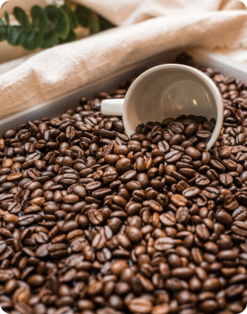
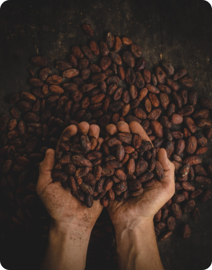
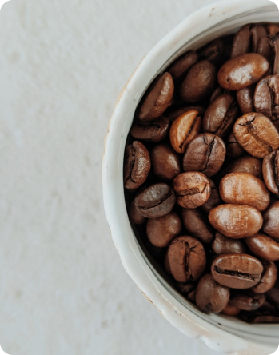
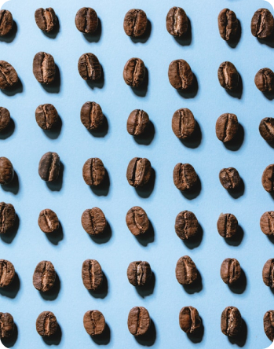

Coffee
- Історія
- Наша історія почалася з любові до справжньої кави. Відбірні зерна, майстерність бариста та увага до деталей – ось що робить кожну чашку унікальною.
- Постачальники
- Ми ретельно обираємо постачальників, працюємо лише з якісною арабікою та робустою, щоб ви могли насолоджуватися найкращими смаками та ароматами.
- Тільки найкраща кава та десерти
- Привітний персонал
- Тільки найзатишні місця
- Місце, де можна відпочити
| Арабіка | Робуста | Ліберіка | Ексцельса |
|---|---|---|---|
|  |  |  |  |
| Арабіка | Робуста | Ліберіка | Ексцельса |
| Арабіка належить до найбільш цінного та поширеного виду кави. Близько 60% кавового зерна на ринку припадає саме на сорти кави арабіка. | Робуста – другий за популярністю сорт кави. Частка такого зерна на ринку становить близько 29%. | Містить низький рівень кофеїну, приємний сильний аромат, але ненасичений смак. Зерна ліберіки використовують в кавових сумішах для посилення аромату. | Унікальний і досить рідкісний сорт, батьківщиною якого називають Південно-Східну частину Азії. |
| Популярність | Назва | Інгредієнти | |
|---|---|---|---|
| Молоко | Склад | ||
| 1 | Латте | З молоком | Правильне співвідношення еспресо до молока має бути 1 до 6. Тобто на одну порцію еспресо (30 мл) ми додаємо шість порції молока (180 мл). Разом отримуємо 210 мл напою, а вспінене молоко дасть нам об’єм напою у 250 мл. |
| 2 | Капучино | Правильне співвідношення еспресо до молока має бути 1 до 4. Тобто на одну порцію еспресо (30 мл) ми додаємо чотири порції молока (120 мл). Разом отримуємо 160 мл напою, а вспінене молоко дасть нам об’єм 180 мл. | |
| 3 | Американо | Без молока | Золотий стандарт – це від 80 мл до 120 мл готового напою. Тобто, берете еспресо за стандартом десь 30 мл, додаєте в нього від 50 до 90 мл гарячої води. |